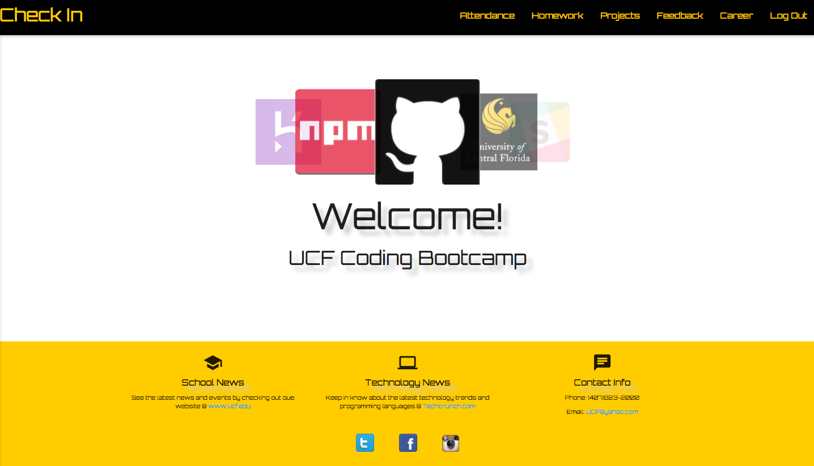
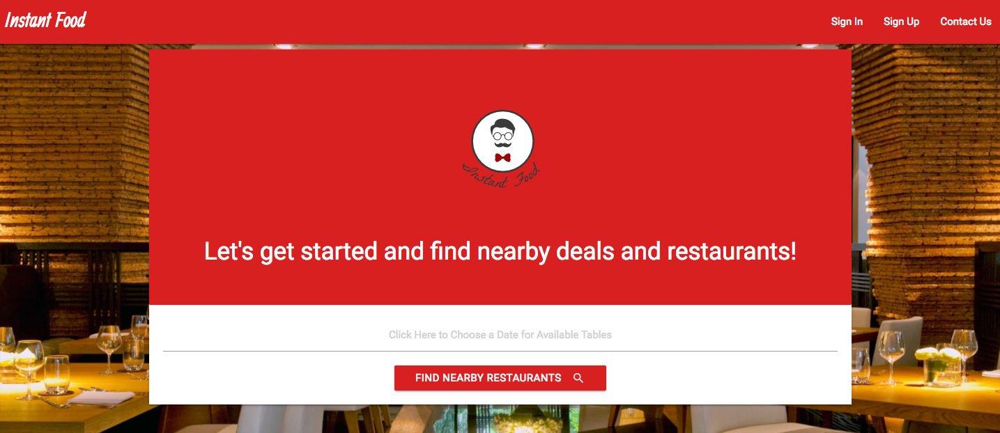
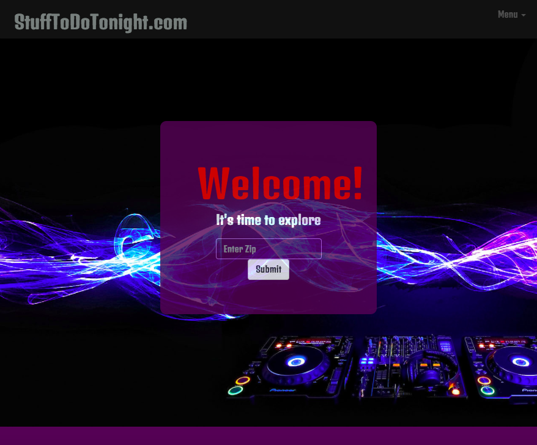
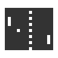

Check In is a web application which allows students to check into scheduled classes, see attendance history, submit assignments, submit feedback and search for currently listed Web Developer jobs. The app was created using HTML 5, CSS3, Materialize, Javascript, JQuery, Dice API, AJAX and JSON, Node JS, Express JS, Sequelize, MySQL, Handlebars and Bcrypt for User Authentication. The site also utilizes SEO to expand its online presence.
GIF-Jax is a web application that uses AJAX to get a JSON object from the GIPHY API. There is a search option which allows users to search for GIF's and share them. It is built with HTML 5, CSS3, Materialize, Javascript and JQuery.

Instant Food is a brand new mobile responsive web application which was developed after realizing the potential for a brand new type of web service. Instant Food allows users to search for nearby restaurants and place reservations. Once the table is reserved, the user is then able to place their order and estimated arrival time. This simplifies the guest experience and allows for businesses to save on time and money. The app was created using HTML 5, CSS3, Materialize, Javascript, JQuery, Google Map API, AJAX and JSON, Node JS, Express JS, Sequelize, MySQL, Handlebars and Bcrypt for User Authentication, Angular JS, Twilio and optimized using SEO.

Stuff To Do Tonight is a mobile responsive, web application which was built with a team of four developers that allows users to find nearby restaurants, bars, entertainment and clubs using the users location as a starting point. In addition the app provides the weather based on the users input of their zip code. The app was created using HTML 5, CSS3, Bootstrap, Javascript, JQuery, API's, AJAX and JSON.

Remember the Classic Game Pong? Well, I built it using HTML Canvas and a Little Javascript Magic. Turn up your volume for maximum effect. Click the button below to play!